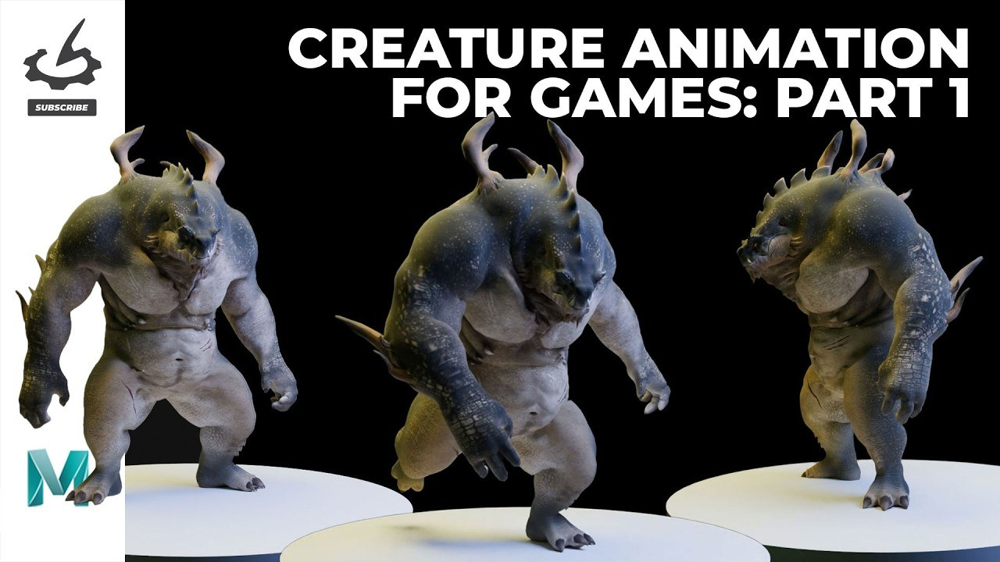

遊戲生物動畫教學：從動捕整理到 Unity 檢視戰鬥動作
Ali Pournassari 的兩部教學以 Maya 整理動捕、製作敵方生物的威嚇與戰鬥動作，最後移入 Unity 檢視；內容面向希望建立製作經驗的中階動畫師。

動畫 ★★★★☆
完整分析
先整理動捕再補完整動作組
教學由原始動捕出發，經重定向、清理及潤飾，用 Maya 曲線編輯器調整重量與時序；基礎動作包含待機、轉向及移動，再延伸成攻擊前威嚇、攻擊、受傷與死亡。
把動作放回玩家視角檢視
講師將受傷反應視為玩家攻擊有效的回饋，死亡則作為戰鬥收束；最後把 Maya 動作帶入 Unity，在三維空間中檢視角色表現。推論：這個銜接有助於把單段動作的表演判斷連回遊戲情境。
教學素材與成效的界線
課程使用商業版 Dinozilla 綁定模型，並透過訂閱提供；文章是課程內容介紹，未證明這套動作能直接套用到任意生物骨架。來源也揭露 CG Channel 由 Gnomon 持有，並非獨立學員成效報告。
BRIEF｜來源已驗證；證據深度較有限，完整分析會明確區分已知資訊與待驗證事項。